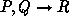

is introduced,
is introduced,
 and
and  are added to the original rule
are added to the original rule 
,
Machine: PIM/UNIX machine Environment: PIMOS/UNIX, KLIC Language: Prolog/KL1 Source Code: 0.2 MB Documents: Manual (English / Japanese)
is introduced,
and are added to the original rule 
,
To overcome this in CMGTP, we can use negative atoms to represent negative constraint propagation, and the following unif refutation and unit simplification mechanism are introduced to prune redundant branches:
where M, D shows model candidate set, and model extending candidate set respectively.
CMGTP can be considered as a meta language to describe constraint propagation rules directly.
We have tried to solve quasigroup existence problems in finite algebra using CMGTP. CMGTP can solve them more efficiently than other constraints solvers.